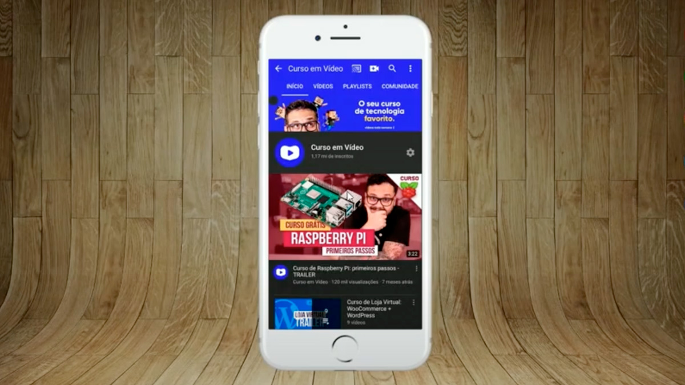
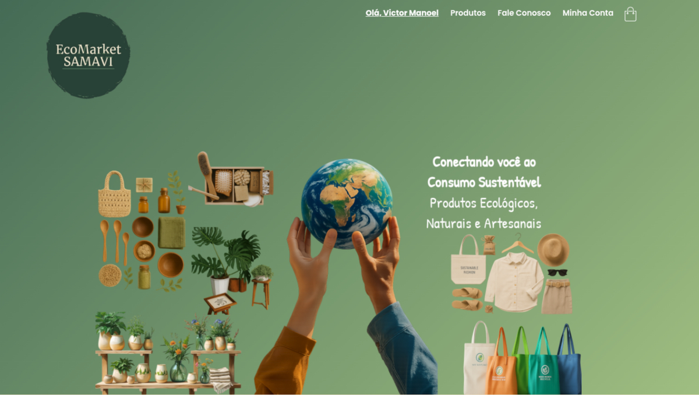

Victor Manoel
Estudante técnico em Informática com conhecimento em desenvolvimento web (HTML e CSS) e familiaridade com ferramentas básicas de informática. Participou do desenvolvimento de um projeto de marketplace como TCC, aplicando habilidades práticas de front-end. Proativo, com boa comunicação e vontade de aprender e crescer na área de tecnologia.
Minhas Skills
HTML5
80%
CSS3
70%
JavaScript
40%
Comunicação
60%
Adaptabilidade
55%
Liderança
70%
Formação
2019 - 2019
Héliu's Informática
Cursos de Informática: Windows, Word, Excel, Power Point, Internet e Digitação
2023 - 2025
Centro Educacional da Bacia do Rio Corrente
Técnico em Informática
Projetos

2025
Projeto de Vídeos
Projeto construído para treinar a inserção de vídeos em nosso site, além da navegação entre páginas.
Saiba mais...
Primeiro projeto construído no Curso de HTML5 e CSS3 do CursoemVídeo onde construímos a navegação entre páginas e a incorporação de mídias, principalmente de imagens e vídeos. Um ótimo início para quem estava em seus primeiros passos em HTML e CSS.

2025
Projeto Cordel
Projeto construído para treinar efeito parallax em imagens e a apresentaçao de conteúdo em diversos tamanhos de tela.
Saiba mais...
Apresentar um conteúdo na tela de forma criativa é sempre um desafio aos desenvolvedores de sites. Nesse projeto, apresentamos um cordel de maneira bem-humorada, responsiva e usando técnicas como parallax para exibição de imagens de fundo.

2025
Projeto Android
Projeto construído para treinar conteúdos e imagens dinâmicas com a História do sistema Android.
Saiba mais...
Você sabia que o sistema Android não foi criado inicialmente para ser usado em celulares? Acompanhe esse projeto para conhecer um pouco mais sobre as curiosidades que envolvem o sistema mais popular para smartphones e aprenda como adaptar mídias a diferentes tamanhos de tela.

2025
Projeto Redes Sociais
Projeto construído para treinar responsividade e múltiplos media queries e divulgar as suas principais redes sociais.
Saiba mais...
Um meta projeto muito interessante deixa o visitante interagir com um aparelho de smartphone que tem seu conteúdo carregado a cada vez que você clica em um ícone de redes sociais. Interatividade e responsividade para um projeto bem elaborado e que utiliza iframes na sua estrutura principal.

2025
Projeto Login
Projeto construído para treinar responsividade e formulários em uma das telas mais populares em sistemas.
Saiba mais...
Criar uma tela de login é algo muito comum na vida de quem vai construir sites. Mas essa tela de login deve conter componentes bonitos e com funcionalidades bem definidas e intuitivas de usar. Essa tela de login vai adaptando seus conteúdos usando caixas flexíveis (flexbox) para funcionar em qualquer tamanho de tela.

2025
Projeto Álbum de Fotos
Projeto construído para treinar conteúdos flexíveis usando CSS FlexBox para mostrar um álbum de fotos.
Saiba mais...
Mostrar fotos de tamanhos diferentes em uma mesma tela pode ser um grande desafio de design, mas também pode ser uma grande oportunidade para treinar nossos conhecimentos adquiridos sobre flexbox e criar uma maneira discreta e de bom-gosto para apresentar nossas memórias em forma de imagens.

2025
Projeto de Marketplace
Desenvolvimento de um protótipo de marketplace para TCC, aplicando conceitos full-stack para criar um catálogo de produtos com perfis de vendedores.
Saiba mais...
Plataforma digital desenvolvida como TCC para conectar pequenos vendedores independentes a potenciais clientes. O foco foi na criação de uma vitrine elegante e funcional, onde cada lojista possui seu próprio perfil personalizável para exibir seus produtos de forma única e organizada.